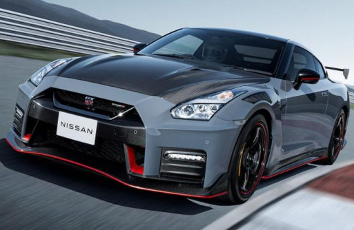
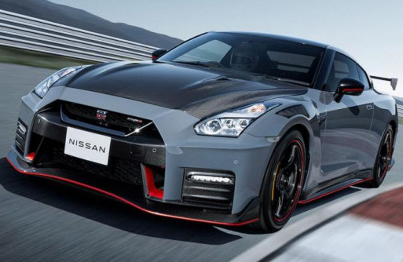
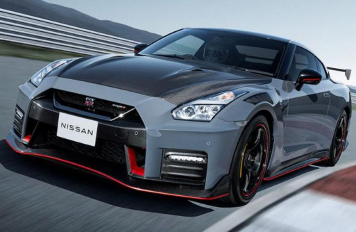
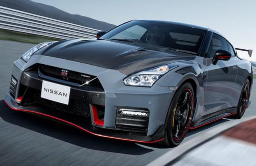

The Nissan GT-R (Japanese: 日産・GT-R, Nissan GT-R), is a high-performance sports car and grand tourer produced by Nissan unveiled in 2007. It is the successor to the Skyline GT-R, a high performance variant of the Nissan Skyline. Although this car was the sixth-generation model to bear the GT-R name, the model is no longer part of the Nissan Skyline model lineup since that name is now reserved for Nissan's luxury-sport vehicles. The GT-R built on the exclusively developed Nissan PM platform, which is an enhanced evolution of the Nissan FM platform used in the separate Nissan Skyline luxury car and the Nissan Z sports car. The GT-R abbreviation stands for Gran Turismo–Racing, obtained from the Skyline GT-R.